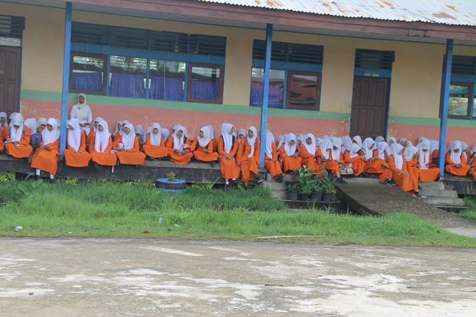

January 14,
2019
2 Commets
SMPN 02 TEMBILAHAN HULU

Menanamkan kecintaan terhadap Nabi Muhammad SWA kepada Pelajarnya, SMPN 2 Tembilahan Hulu mengelar peringatan Maulid Nabi Muhammad SAW 1436 H dengan tema Mari kita tingkatkan rasa cinta kepada Rasulullah yang berlangsung dihalaman sekolah meski sederhana namun kebersamaan dan keluargaan besar SMPN 2 Tembilahan Hulu cukup meriah dan heboh.
Meriah acara tersebut tidak lepas dari tausiyah yang disampikan Ustad H Syaiful Yani SPdI dalam menguraikan tentang suri ketauladan Nabi Muhammad SWA kepada pelajar, dimana pesan ustad tersebut bahwa
“ mari bersama kita prbanyak bersyukur atas nikmat Allah yang telah memberi tiada terhingga, rajin lah membaca Shalawat nabi dan hargai orang tua, guru dan sesama manusia” urainya.
Sementara itu Kepala SMPN 2 Tembilahan Hulu, Heryandri SPd mengatakan peringatan maulid Nabi Muhammad SAW diselenggarakan untuk menanamkan dan memupuk kecintaaan pelajarnya terhadap baginda Rasulullah sebagai nabi akhir zaman.
Selain itu dengna peringatan ini para pelajar dapat mengenal sejarah dan pribadi nabi, karena hal itu sebagai bekal terhadap pelajar dalam mengantisipasi agar mereka tidak terpengaruh terhadap hal-hal negatif yang saat ini sangat rentan.
Untuk itu tujuan kegiatan Kelahiran nabi ini tentunya sebagai momen menanamkan kecintaan pelaajr khususnya yag ada di SMPN 2 Tembilahan Hulu terhadap Nabi Muhammad SAW, agar menjadi penurus hamba Allah yang sholeh dan sholeha.
RzkyFdlh.